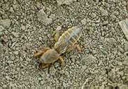

Javasolt készítmények:
Lótücsök
Gryllotalpa gryllotalpa
Szabadföldi és fólia laatti zöldségtermesztésben egyaránt
jelentős. Talaj felszín alatii járatait a növények gyökér- és gyökérnyaki
szintjén ássa. Az útjába kerülő föld alatti növényrészeket elrágja, a
növényeket kifúrja és ezzel súlyos károkat okoz. A talajba többnyire
szervestrágyával kerül, vagy a közeli trágyarakásokból települ oda. Kedveli a
szerves anyagban dús, melegedő, gyakran öntözött talajokat. Igen szapora, egy-egy
nőstény 200-300 petét is lerak. A lárvák kezdetben csoportosan károsítanak,
később szátmásznak.
Javasolt készítmények:
 Lótetű Arvalin
Lótetű Arvalin
 Galition 5 G
Galition 5 G
 Buvatox 5 G
Buvatox 5 G
 Wofatox porozó
Wofatox porozó